진동응답/주파수 응답
진동응답은 공정의 입력변수가 사인함수일 때의 시스템의 정상상태 응답이다. 입력이 사인인 경우 나타나는 출력은 입력신호를 따라가는데, 이때 입력신호의 크기와 위상이 바뀌면서 안정된 시스템의 사인함수로 나타나게 되는 것이다.
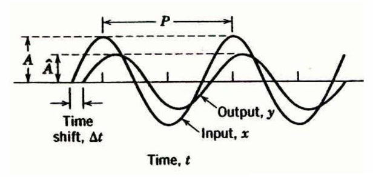
1차 공정에 진폭A이고 진동수가 W인 사인변화가 도입되었을 때, 출력 Y는 어떻게 되겠는가? 먼저 x(t)는 다음과 같다.
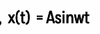
이걸 라플라스 변환하고, 1차에 넣어보도록 하자.
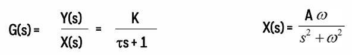 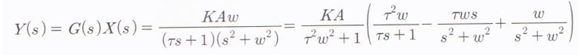
이를 라플라스 역변환한다.
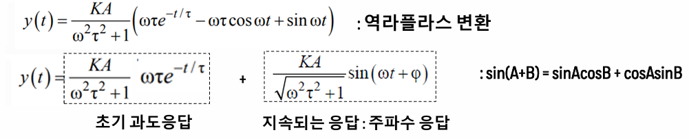
앞의 항은 시간이 지나면 0에 가까워지므로, 시간이 쭉 지났을 때는 2번째항만이 남게 된다. 따라서 처음항은 초기에만 영향을 준다는 의미로 초기 과도응답이라고 한다. 지속되는 응답을 자세히보면 크기와 위상에서 차이가 발생함을 알 수 있다.
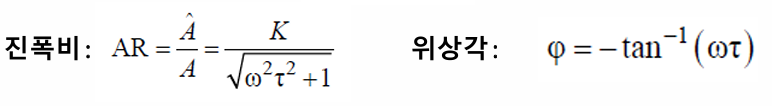
여기서 이제 위상각이 왜 저렇게 나오는 지 궁금할 수 있다. 이걸 이해하기 위해서는 복소수를 먼저 공부해야 한다.
복소수는 a+bi꼴로 나타나는데, 이때 a를 실수부, b를 허수부라고 부르고, 좌표에서는 x축에 실수부, y축에 허수부를 찍는다.
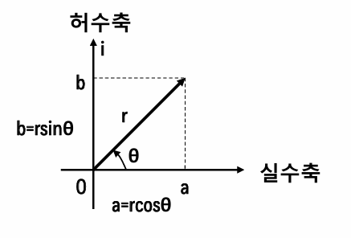
여기서 r과 각도를 구할 수 있는데, 이 둘을 각각 크기와 위상각이라고 표현한다.
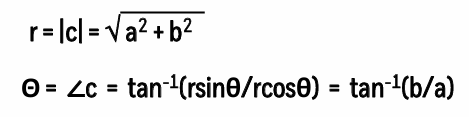
그럼 특징적인 좌표의 위상각을 계산해보자.
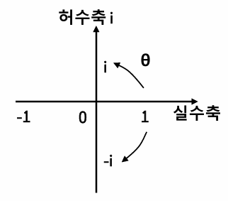 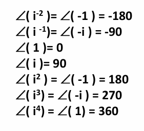
1=0도이고 i가 곱해질 때마다 90도씩 증가하는 것을 볼 수 있다.
또 매우 중요한 다음 관계도 숙지해두자.
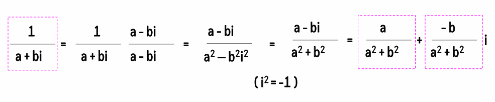
이제 1차공정의 진동응답을 쉽게 구하는 기술적인 방법을 알아보자.
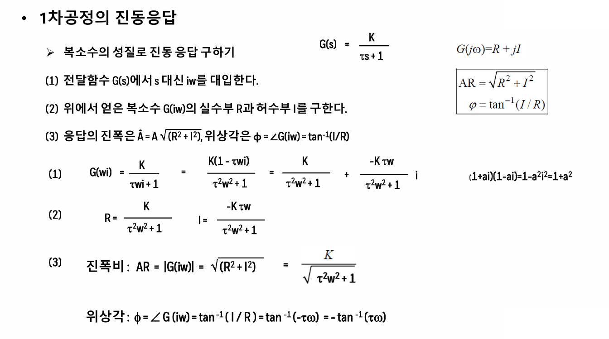
위는 복소수의 성질로 진동 응답을 구하는 방법이다. 원래는 전달함수에 사인응답을 넣어서 구해야 하지만, 그렇게 하지 않고 s대신 iw를 대입해도 구할 수 있다. 이를 직접치환법이라고 하며 증명은 생략한다.
먼저 iw를 넣고 분모를 실수화한다. 이후 실수부R과 허수부I를 얻을 수 있다. 이제 진폭비는 G(iw)의 크기이고, 위상각은 아크탄젠트(I/R)이다.
이 진동응답을 보기 쉽게 나타내는 방법이 보데선도인데, 그것도 공부해보자.
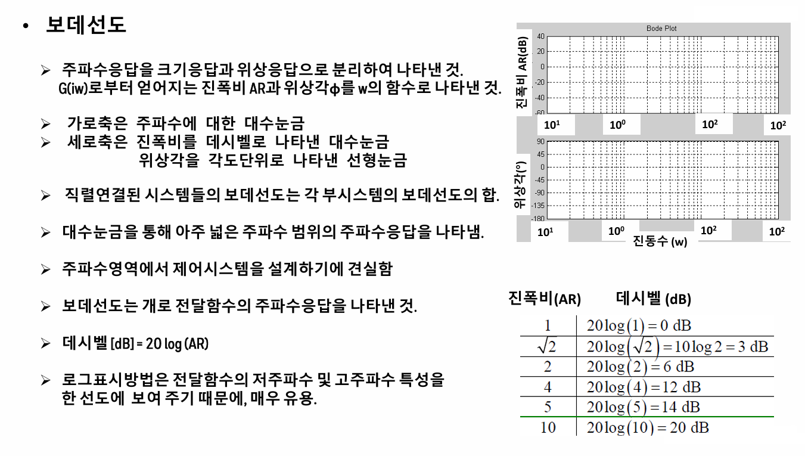
보데선도는 가로축은 LOG(W)이고 세로축은 데시벨 또는 위상각이다. 이때 데시벨은 진폭비의 실제값을 20log()에 대입한 것이다.
직렬연결된 시스템들의 보데선도는 각 부시스템의 보데선도의 합이며 대수눈금을 쓰는 이유는 아주 넓은 주파수 범위를 나타내기 위함이다. 보데선도는 오픈루프 전달함수의 주파수 응답을 나타낸 것으로, 주파수영역에서 제어시스템을 설계하기에 좋다.
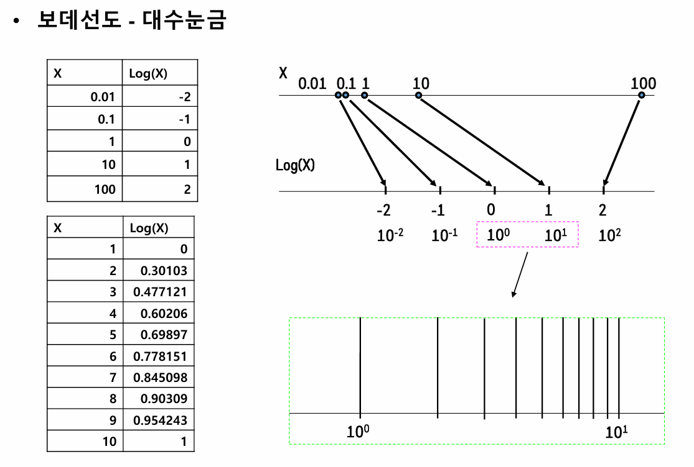
로그로 나타내면 x축을 넓은 범위로 나타내기 편하다.
이제 다른 전달함수들에 대하여 보데선도로 나타낸 것을 살펴보자.
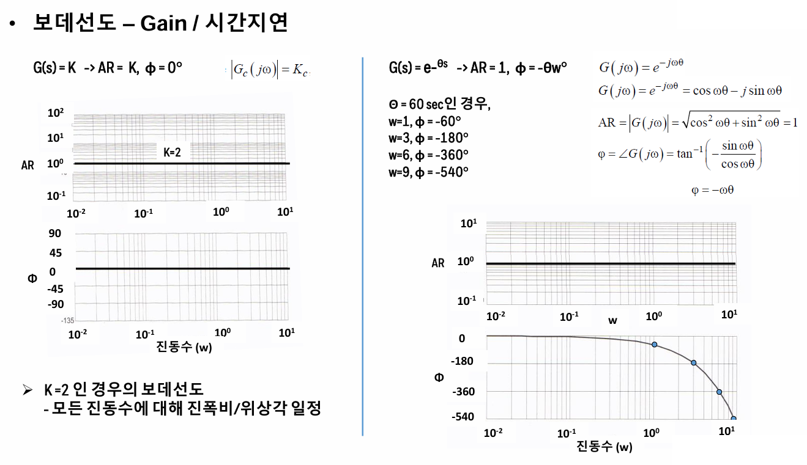
먼저 첫번째는 전달함수가 상수일때, 이 경우에는 사인응답을 넣어도 보데선도는 일정하게 나온다. 다음으로 시간지연의 경우 사인응답을 넣으면 보데선도에서 진폭비는 1나오고 위상은 -w⊙이다. 위상각이 -180밑으로 변하게 되면 피드백제어가 공정을 불안정하게 만드는 경향이 있으므로 시간지연은 공정을 불안정하게 만든다.
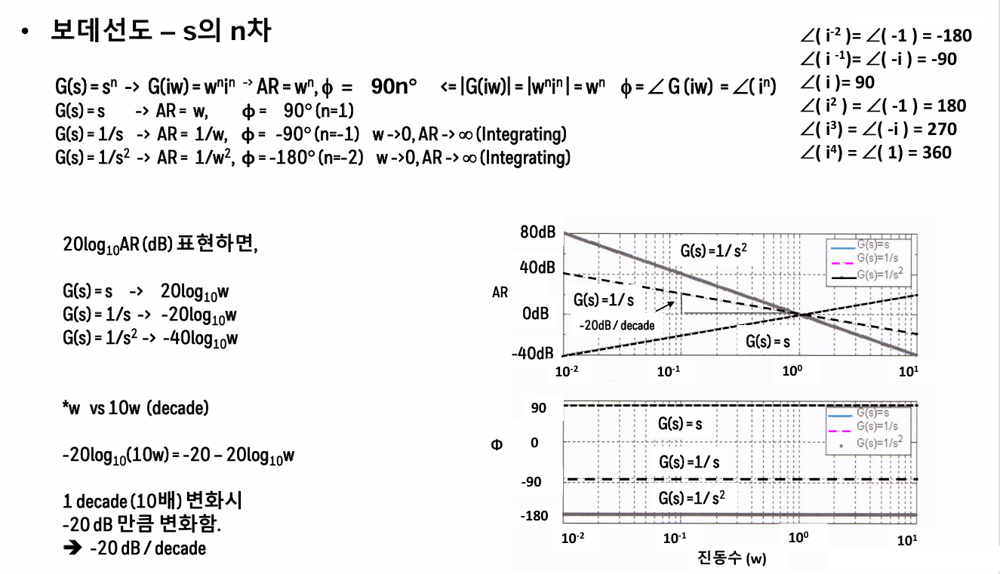
진동수가 10배 증가하면 -20db이 감소한다.
이제 하이라이트인 보데선도를 1차공정에 적용하는 것을 살펴보자.
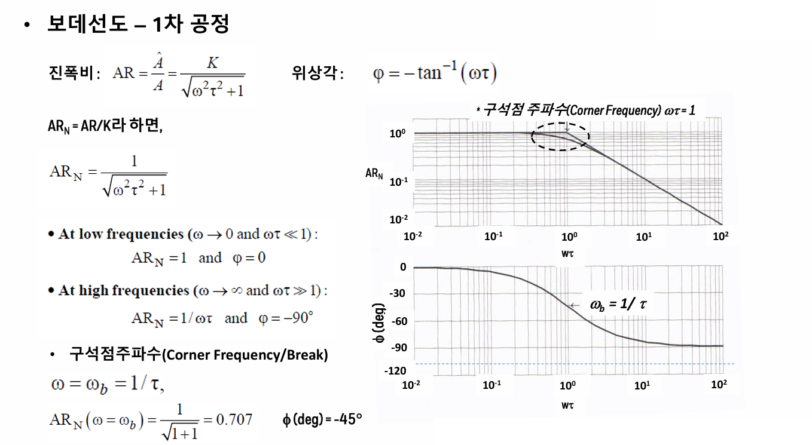
진동응답을 1차에 넣고 그걸 보데선도로 나타내면 위와같다.
여기서 편의상 K를 나눠주어 Y값을 ARN으로 나타내준다. 즉 공정이득이 1인 경우를 볼 것이다. 이때는 주파수가 낮은 초기에는 데시벨이 1이고 위상각이 0이었다가 점점 데시벨은 낮아지고 위상각도 점점 -90도로 감소 수렴하게 된다. 이때 점근선과 점근선을 연결하여 만나는 점을 구석점 주파수라고 하고, 이때는 w*타우가 1인 지점이다. 이때의 진폭비는 1/root(2)=0.707이다. 이때 구석점주파수에서 위상각은 -45도이다.
이제 2차공정을 살펴보자. 이때 2차공정은 과도감쇠나 과소감쇠냐에 따라 시스템의 응답이 달라지므로 나눠서 살펴보자.
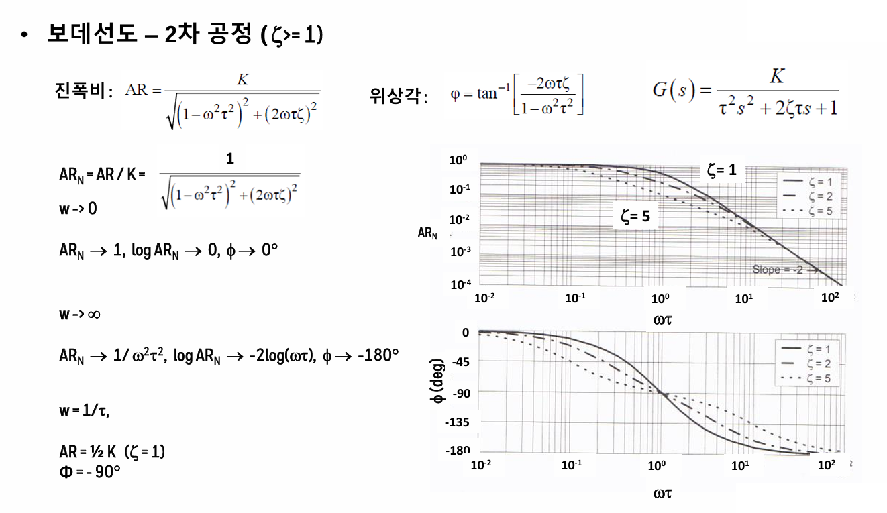
과도감쇠의 경우에는 이타가 크면 클 수록 진폭비가 줄어들게 된다. 진폭비가 준다는 것은 공정이 안정하다는 것이다.
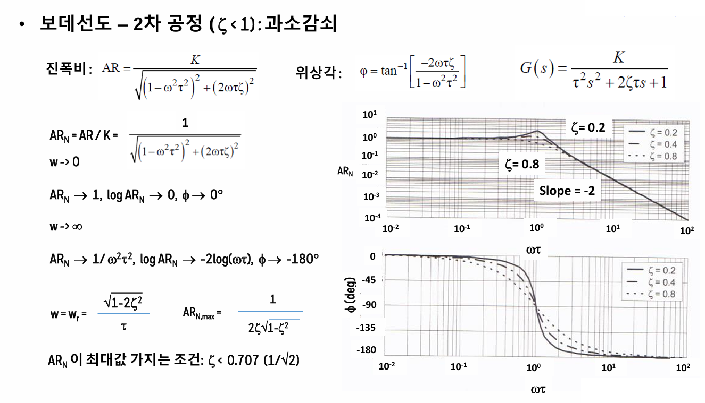 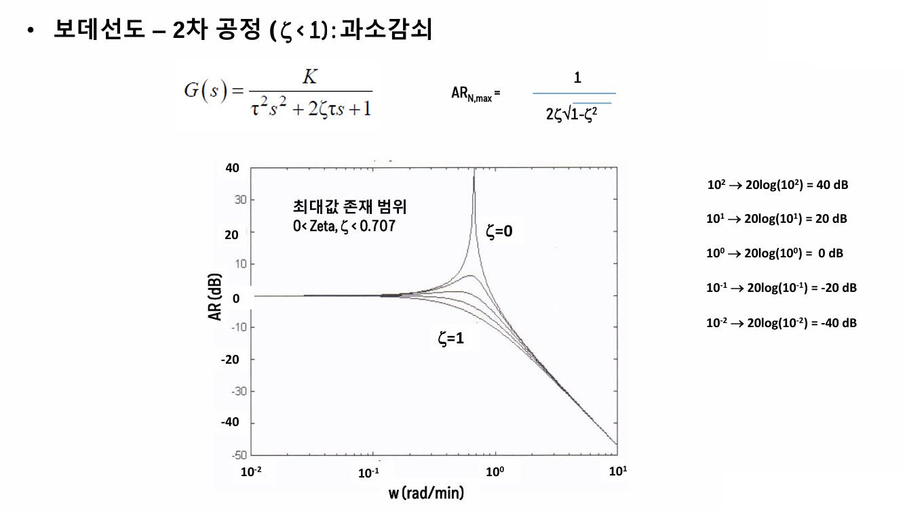
과소감쇠의 경우에는 이타값에 따라 공진이 생긴다.